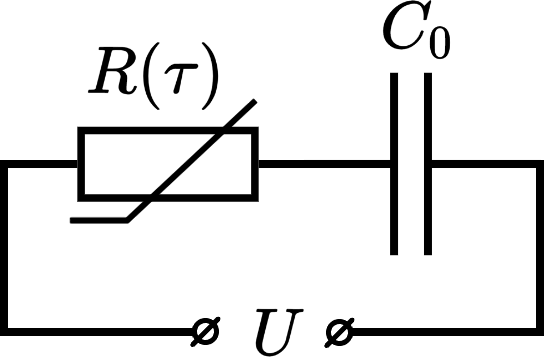
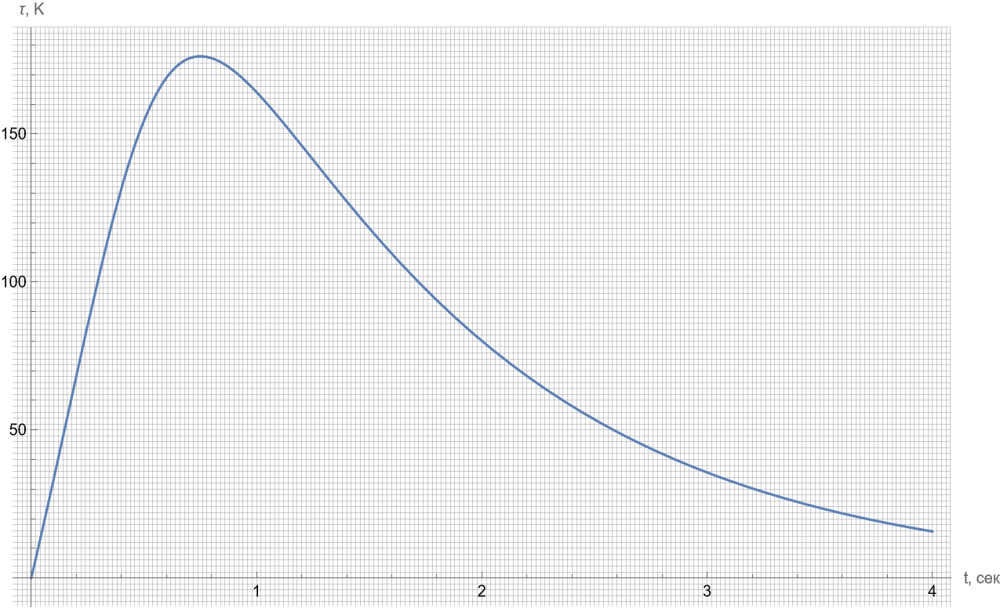

Y23 (2023) — English translation
Introduction Thermistors are resistors that can noticeably change their resistance with temperature. Since almost all resistive materials have this property, thermistors are usually called elements that experience a significant or atypical change in resistance over a specific narrow temperature range. The two main types of thermistors are: Thermistors with a positive temperature coefficient of resistance (TCR) - the so-called. posistors. They are commonly used in electrical circuits as fuses, i.e. limit the total current. For example, how a regular incandescent lamp behaves like a posistor. Thermistors with negative TCS - so-called. NTC thermistors. They are also used as limiters, but for inrush currents, i.e. where high currents at the start can lead to burnout of circuit elements. This can happen in powerful lighting systems or when charging powerful capacitors, which we will consider in the first part of the problem.
Thermistors are resistors that can noticeably change their resistance with temperature. Since almost all resistive materials have this property, thermistors are usually called elements that experience a significant or atypical change in resistance over a specific narrow temperature range. The two main types of thermistors are:
For the correct operation of most power supplies, a mechanism is required that allows you to regularly charge a large capacitor without harm to the contacts and traces of the board, since at the initial moment of time the current through a practically discharged capacitor is so high that it can melt them. NTC thermistors are usually used for this: at the beginning they are at room temperature and have a fairly high resistance, thereby limiting the current. At the same time, during the characteristic charging time of the capacitor, the thermistor heats up, and therefore, by the time there is no need to limit the current, its resistance drops several times, ensuring rapid recharging.
The thermistor is connected in series with a capacitor of some capacity $C$ to a constant voltage source with some emf $U$. Previously, the thermistor resistance was measured at room temperature $T_0=298~К$. It turned out to be equal to $R_0=37.3~Ом$. To control the operation of the circuit during test charging of the capacitor, the time dependence $t$ of the deviation $\tau$ of the thermistor temperature from room temperature was removed. The graph $\tau(t)$ is shown in good quality on a separate page. To describe the temperature evolution of the thermistor, we introduce its heat capacity $c$ and contact thermal conductivity $\kappa$.
The thermistor is connected in series with a capacitor of some capacity $C$ to a constant voltage source with some EMF $U$. Thermistor resistance was previously measured at room temperature $T_0=298~К$. It turned out to be equal to $R_0=37.3~Ом$. To control the operation of the circuit during test charging of the capacitor, the time dependence $t$ of the deviation $\tau$ of the thermistor temperature from room temperature was removed. The graph $\tau(t)$ is shown in good quality on a separate page. To describe the temperature evolution of the thermistor, we introduce its heat capacity $c$ and contact thermal conductivity $\kappa$.

Since NTC thermistors implement a semiconductor conduction mechanism, the dependence of the NTC thermistor resistance $R$ on the absolute temperature $T$ can be described implicitly using the Steinhart–Hart equation:\[\frac1T=A+B\ln R+C\left[\ln R\right]^3\quad(SI),\]where $A$, $B$ and $C$ – so-called. Steinhart–Hart coefficients. These coefficients depend on the thermistor material. Determining these coefficients for the thermistor used is the goal of this part of the problem.
In Part A we looked at what negative TCR thermistors can be used for, and in Part B we found the coefficients of the Steinhart-Hart equation. In this part, we will try, based on these data, to study the operation of the thermistor in stationary mode and construct its current-voltage characteristic.
As you might have guessed, beyond this limiting point lies an unstable section of the current-voltage characteristic, which continues until the melting point of the thermistor, which is equal to $T_\mathrm{max}=1380~^\circ\mathrm C$.
The original graph in maximum resolution is given in the materials for the problem

Source: https://pho.rs/p/3021